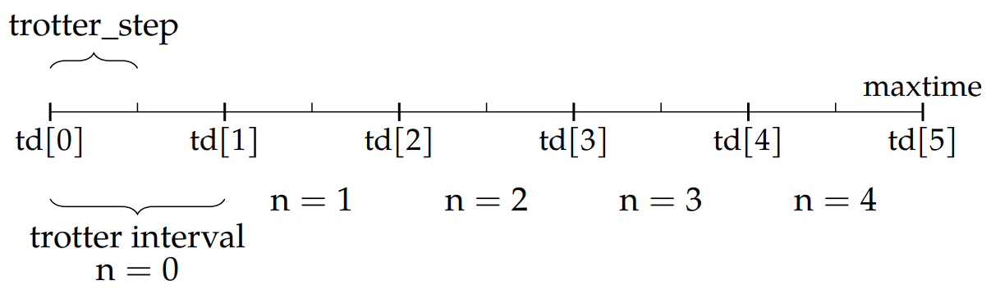

2. Simulating a Raman transition with laser pulses
[2]:
from atomcalc import Level, Laser, Decay, System, plot_pulse
import numpy as np
We use the same parameters as in the first tutorial.
[3]:
# define level objects
level1 = Level(0)
level2 = Level(20)
level3 = Level(100)
# define decay object
decay = Decay([0,0],[[level3,level1],[level3,level2]]) # no decay
# define parameters
Delta = 20
delta = 0
Omega1 = 1
Omega2 = 1
plot_pulse is just a little function to draw the pulse with matplotlib.[4]:
def pulse_1(t):
return Omega1 * np.exp(-0.5 * ((t - 150) / (50)) ** 2)
def pulse_2(t):
return Omega2 * np.exp(-0.5 * ((t - 150) / (50)) ** 2)
plot_pulse(pulse_1, range(0, 300, 1))
[5]:
# System
laser1 = Laser(Omega1, Delta, [level1, level3], pulse=pulse_1)
laser2 = Laser(Omega2, Delta - delta, [level2, level3], pulse=pulse_2)
system = System([level1, level2, level3], [laser1, laser2], decay)
system.draw()
[6]:
# calculate and show the time evolution
system.simulate([1, 0, 0],1,300,Diagonalization=True,Trotterintervals=50,points_per_TI=2)
Hamiltonian in the rotating frame: [[ 0.+0.j 0.+0.j 0.+0.j]
[ 0.+0.j 0.+0.j 0.+0.j]
[ 0.+0.j 0.+0.j 20.+0.j]]
One trotterinterval has size 6.0.
One trotter step has size 3.0.
Maximum population of level 2:
[6]:
0.7997789543219783
2.1. Trotter decomposition (excerpt of my master thesis)

This Figure shows the Trotter decomposition of a timeline and visualizes the parameters of the sourcecode. The illustration is done with number_TI = 5 and points_per_TI = 2. The time discretization td defines the Trotter intervals where the respective Liouvillian L[n] is constant. The trotter_step defines the points in time where the density matrix is calculated.
For every Trotter interval the respective Liouvillian is constant and for every trotter_step a density matrix is calculated. There are two conditions for the code to work: The number of Trotter intervals number_TI must be chosen so that the Trotter intervals have integer time. Additionally, points_per_TI must be chosen so that trotter_step is integer. Together that means \(\frac{\texttt{maxtime}}{\texttt{number\_TI}\cdot \texttt{points\_per\_TI}}\) has to be an integer. In
the illustrated example this would be fulfilled for maxtime = 10, for example.